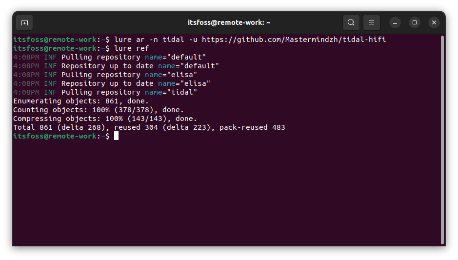
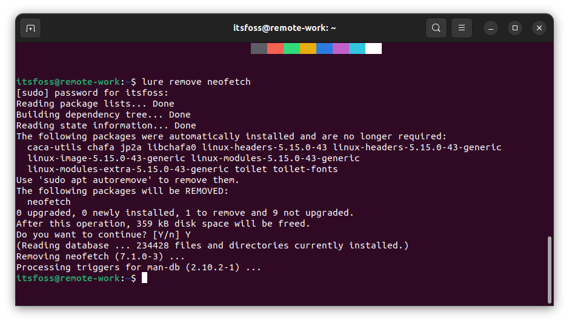
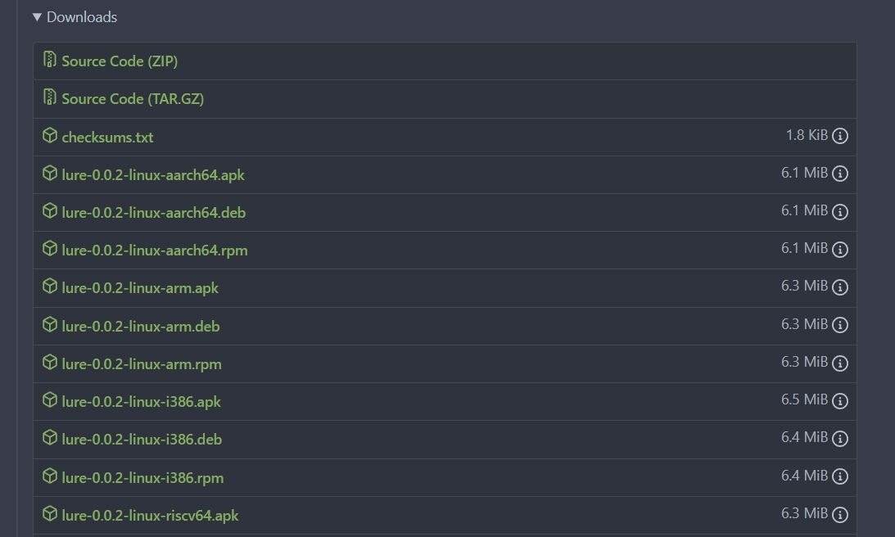
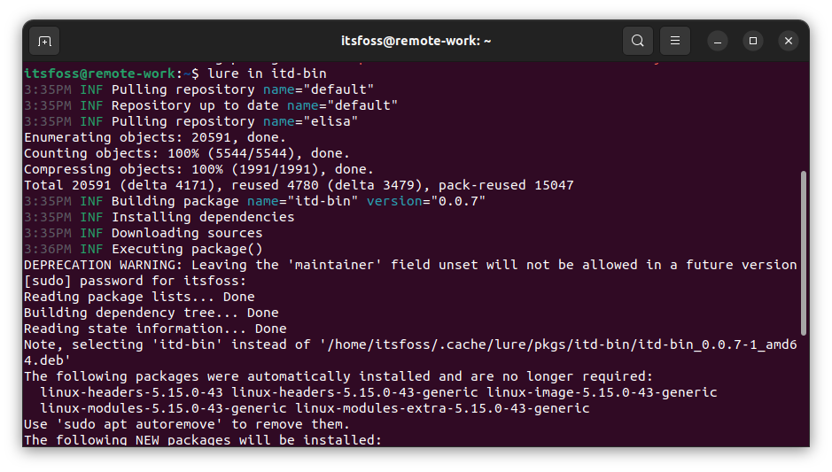

LURE 初窥！将 AUR 带入所有 Linux 发行版
| 2022-10-18 10:46 评论: 1
LURE 是一个新的开源项目，它希望成为所有发行版的 AUR。
AUR（Arch 用户仓库）是一个由社区驱动的基于 Arch 的 Linux 的发行版仓库。
简而言之： 它可以帮助你安装官方仓库中没有的软件包，并让你获得最新的版本。
我发现它对我在 Manjaro Linux 上的体验很有帮助。
从技术上讲，AUR 从源头构建一个软件包，然后利用软件包管理器（pacman）来安装它。
你也可以在我们的详细指南中探索更多关于它的信息。
📢 现在你对 AUR 有了一个基本的了解，有一个 新的开源项目 旨在将 AUR 的功能带到所有的发行版中。
这个项目被称为 “Linux 用户仓库”（LURE）。
💡 LURE 项目正处于 alpha 阶段，由创建者在几周前宣布。所以，它完全是一个正在进行的工作。
已经有这样的项目了？

没有。
开发者们已经尝试做一个 AUR 的替代品，但是是针对特定的发行版。就像 makedeb 软件包仓库 是针对 Debian 的。
LURE 是一个雄心勃勃的想法，可以在你选择的任何发行版上工作。
它试图成为一个帮助你使用类似于 PKGBUILD 的脚本为你的发行版创建原生软件包的工具。
开发者在 Reddit 公告帖子 中提到了一些技术细节：
我的项目叫 LURE，是 “Linux 用户仓库”的简称。它构建原生软件包，然后使用系统软件包管理器安装它们，就像 AUR 一样。它使用一个类似于 AUR 的
PKGBUILD的构建脚本来构建软件包。它是用纯 Go 语言编写的，这意味着它在构建后没有任何依赖性，除了一些特权提升命令（
sudo，doas等等）和任何一个支持的软件包管理器，目前支持pacman、apt、apk（Alpine Linux 上，不是安卓）、dnf、yum和zypper。
听起来很棒！
你也可以在它的 GitHub 镜像 上探索更多信息。
使用 LURE
你不必安装一个额外的软件包管理器来使它工作，它可以自动与你系统的软件包管理器一起工作。
因此，如果它在其仓库（或任何其添加的仓库）中没有找到一个包，它就会转到系统的默认仓库，并从那里安装它。就像我用 lure 命令在我的系统上安装/移除 neofetch 一样。

虽然该项目处于早期开发阶段，但它为各种发行版提供了 二进制包，以让你安装和测试它们。

目前，它的仓库包括一个来自创建者自己的项目。但你可以尝试添加一个仓库并构建/安装东西。
为了方便起见，我试着在它的仓库中安装软件包。

命令看起来像这样：
lure in itd-bin
在它的 官方文档页面，你可以读到更多关于它在构建/安装/添加存储库方面的用法。
未来版本的一些计划中的功能包括：
- 自动安装脚本
- 基于 Docker 的自动测试工具
- 仓库的网页接口
让它变得更好
嗯，首先，这是一个优秀的项目。如果你是过去使用过 Arch 的人，或者想离开 Arch Linux，这将是一个很好的工具。
然而，对于大多数终端用户和非 Arch Linux 新手来说，像 Pamac GUI 软件包管理器 这样的软件包管理器支持 LURE 应该是锦上添花的。
当然，在目前的阶段，它需要开源贡献者的支持。所以，如果你喜欢这个想法，请随时为该项目贡献改进意见
*💭 你对 LURE 有什么看法？请在下面的评论中分享你的想法！ *
via: https://news.itsfoss.com/lure-aur/
作者：Ankush Das 选题：lkxed 译者：wxy 校对：wxy